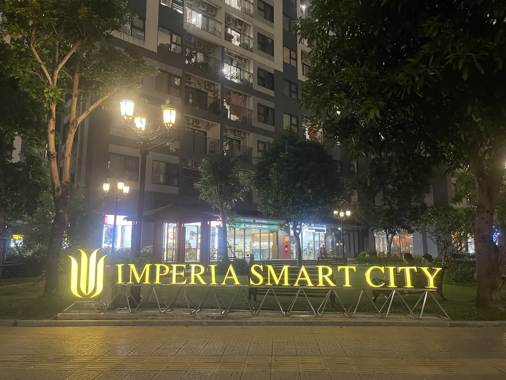

Nếu anh/chị đang tìm thuê căn hộ Imperia Smart City (phường Tây Mỗ, Hà Nội), đây là phân khu được hỏi nhiều nhất nhóm căn hộ cao cấp trong khu đô thị Vinhomes Smart City. Bài viết tổng hợp vị trí, các loại căn, giá thuê thực tế theo quỹ căn đang trống, hệ tiện ích nội khu và những điểm cần kiểm tra trước khi đặt cọc — kèm ảnh chụp thực tế tại phân khu.
1. Imperia Smart City là phân khu nào?
Imperia Smart City là tổ hợp căn hộ nằm bên trong khu đô thị Vinhomes Smart City, do MIK Group phát triển sau khi nhận chuyển nhượng quỹ đất từ Vingroup. Đây là điểm nhiều người đi thuê hay nhầm: cư dân Imperia vẫn dùng chung toàn bộ tiện ích của đại đô thị — công viên trung tâm, Vincom Mega Mall, Vinschool, xe buýt điện VinBus — nhưng phần tiện ích nội khu dưới chân tòa và đơn vị phát triển thì thuộc MIK Group.
- Quy mô: 5 tòa căn hộ ký hiệu I1 – I5, cao 38–39 tầng.
- Loại hình: Studio, 1PN+, 2PN, 2PN+, 3PN.
- Vị trí trong khu đô thị: sát cụm Masteri, gần công viên trung tâm, nằm giữa hai công viên Central Park và Sportia Park.
- Kết nối: tiếp giáp trục Đại lộ Thăng Long – Lê Trọng Tấn – Quốc lộ 70, vào trung tâm khoảng 15 phút.
So với mặt bằng chung khu đô thị, giá thuê tại Imperia nhỉnh hơn Sapphire nhưng bù lại diện tích căn rộng hơn và tiện ích thể thao nội khu đầy đủ hơn.
2. Ưu đãi miễn phí dịch vụ tòa I1–I3
Đây là lý do nên so sánh tổng chi phí ở thay vì chỉ so tiền nhà. Một căn Imperia 10 triệu đang miễn phí dịch vụ có thể rẻ hơn một căn 9,5 triệu ở phân khu khác khi cộng đủ các khoản. Anh/chị nên xác nhận lại mốc thời gian còn hiệu lực với ban quản lý trước khi ký hợp đồng, vì gói ưu đãi tính theo ngày bàn giao của từng tòa.
Chi tiết các khoản phí còn lại anh/chị xem trong bài phí dịch vụ Vinhomes Smart City.
3. Các loại căn & giá thuê hiện tại
Bảng dưới tính trực tiếp từ quỹ căn Imperia đang trống trên hệ thống, cập nhật 12/08/2026 — không phải giá tổng hợp từ tin đăng thị trường:
| Loại căn | Diện tích | Phù hợp với | Khoảng giá/tháng |
|---|---|---|---|
| Studio | 28–31 m² | Người độc thân, cặp đôi | 7 – 8 triệu |
| 1 Ngủ + | 43 m² | Cặp đôi, người cần góc làm việc | 7,5 – 10 triệu |
| 2 Ngủ | 54–55 m² | Gia đình 3–4 người | 10 – 14 triệu |
| 2 Ngủ + | 62–64 m² | Gia đình cần thêm phòng đa năng | 9,5 – 14 triệu |
| 3 Ngủ | 76 m² | Gia đình đông người, nhóm chuyên gia | 14 triệu |
Để xem chính xác những căn còn trống kèm ảnh thật và ngày vào ở, anh/chị xem danh sách căn hộ Imperia Smart City đang cho thuê.
4. Tiện ích nội khu & ảnh thực tế
Nếu chỉ so căn hộ với căn hộ, các phân khu trong Vinhomes Smart City khá tương đồng. Khác biệt của Imperia nằm ở phần không gian dưới chân tòa: bể bơi ngoài trời phong cách resort rộng khoảng 1.000 m², sân tennis, sân cầu lông, các sân bóng rổ và bóng chuyền, sân chơi trẻ em và đường dạo bộ đan xen giữa năm tòa.
Trên thực tế vận hành, cụm sân này đang là điểm cộng lớn nhất với khách thuê trẻ: sân được dùng linh hoạt cho pickleball — môn đang phổ biến rất nhanh tại Hà Nội. Khung giờ 17h–20h các ngày trong tuần gần như kín người chơi.
Ngoài tiện ích nội khu, Imperia nằm kẹp giữa hai công viên trung tâm của khu đô thị. Với gia đình có trẻ nhỏ hoặc người có thói quen chạy bộ, đây là khác biệt cảm nhận được hằng ngày: ra khỏi sảnh là tới công viên, không phải đi xe. Toàn cảnh tiện ích khu đô thị anh/chị xem thêm tại bài tiện ích Vinhomes Smart City.
5. Kinh nghiệm chọn căn tại Imperia
- Ưu tiên view thoáng hơn tầng cao. Căn tầng 12 nhìn ra công viên thường dễ ở hơn căn tầng 25 nhìn thẳng vào tòa đối diện. Khi xem nhà, đứng ở ban công nhìn thẳng — khoảng cách tới tòa kế bên dưới 30 m thì buổi tối phải kéo rèm thường xuyên.
- Hướng ban công. Ban công hướng Tây khiến phòng khách nóng gay gắt từ 14h–18h và tăng đáng kể tiền điện mùa hè. Hướng Đông Nam và Bắc dễ chịu hơn.
- Hỏi rõ tòa còn miễn phí dịch vụ đến khi nào. Ưu đãi tính từ ngày bàn giao từng tòa nên thời hạn còn lại không giống nhau.
- Kiểm tra nội thất tận nơi. Ảnh đăng tin thường chụp lúc căn mới bàn giao. Xem trực tiếp điều hòa có kêu không, bình nóng lạnh còn hoạt động, chân tủ bếp có ẩm — và chụp lại hiện trạng trước khi ký.
- Đi xem vào 17h30–18h30. Đây là khung giờ đông nhất, phản ánh đúng mật độ cư dân, tình trạng gửi xe và độ ồn thực tế.
Các bước hợp đồng, cọc và thủ tục tạm trú anh/chị xem chi tiết trong bài thủ tục thuê nhà Vinhomes Smart City.
6. Hai điểm nên cân nhắc trước
Em nói thật hai điểm để anh/chị cân nhắc trước khi quyết định:
- Chỗ gửi ô tô. Cả khu đô thị chỉ có một tầng hầm, phần lớn ô tô phải gửi ngoài parking zone nên hơi bất tiện. Nếu anh/chị đi ô tô, hãy hỏi rõ chỗ gửi và mức phí trước khi đặt cọc.
- Hàng quán nội khu. Tiện nhưng chất lượng ở mức tạm; cư dân ở lâu thường chạy sang khu Geleximco ngay cạnh, nhiều lựa chọn hơn hẳn và chỉ mất vài phút.
Ngược lại, nếu công việc đòi hỏi có mặt thường xuyên ở khu vực Hoàn Kiếm – Hai Bà Trưng vào giờ cao điểm, hãy tính kỹ quãng đường: giờ tan tầm trên Đại lộ Thăng Long và Lê Văn Lương có thể kéo dài thời gian di chuyển thêm 15–20 phút.
7. Câu hỏi thường gặp
Imperia Smart City có phải của Vinhomes không?
Không. Imperia Smart City do MIK Group phát triển trên quỹ đất nhận chuyển nhượng từ Vingroup, nằm bên trong khu đô thị Vinhomes Smart City. Cư dân vẫn dùng chung tiện ích của đại đô thị.
Imperia Smart City có mấy tòa?
Có 5 tòa căn hộ ký hiệu I1 đến I5, cao 38–39 tầng.
Thuê ở đây có được miễn phí dịch vụ không?
Các tòa I1, I2, I3 đang trong thời gian miễn phí dịch vụ theo gói ưu đãi 5 năm tính từ ngày bàn giao. Anh/chị nên xác nhận lại thời hạn còn hiệu lực với ban quản lý trước khi ký hợp đồng.
Cọc bao nhiêu, hợp đồng bao lâu?
Điều khoản phổ biến: hợp đồng 1 năm, cọc 1 tháng tiền nhà, thanh toán theo kỳ 3 tháng. Một số chủ nhà linh động hơn nếu thuê dài hạn.
Khách nước ngoài thuê có vướng thủ tục gì không?
Không. Đã có dịch vụ lo trọn thủ tục đăng ký tạm trú, anh/chị chỉ cần cung cấp giấy tờ theo hướng dẫn.
Tìm căn Imperia Smart City đang còn trống
Dữ liệu cập nhật mỗi ngày — ảnh thật, giá thuê mới nhất, lọc nhanh theo loại căn, mức giá và nội thất. Anh/chị gửi em ngân sách, số phòng ngủ và ngày muốn vào ở, em lọc sẵn danh sách phù hợp.
Thông tin dự án và giá thuê mang tính tham khảo tại thời điểm cập nhật, có thể thay đổi theo thị trường. Đây là dịch vụ môi giới cho thuê cá nhân, không phải đại diện chính thức của Vinhomes/Vingroup hay MIK Group.